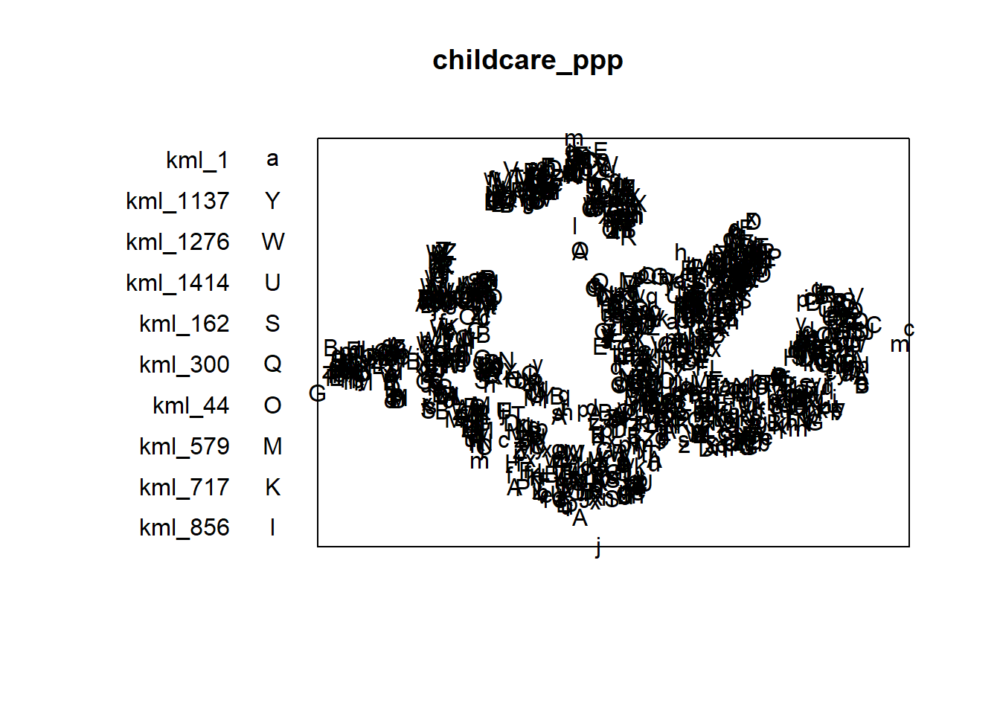

pacman::p_load(sf, raster, spatstat, tmap, tidyverse)In-class Exercise 2
1 Installing and Loading the R packages
In this hands-on exercise, five R packages will be used, they are:
sf, a relatively new R package specially designed to import, manage and process vector-based geospatial data in R.
spatstat, which has a wide range of useful functions for point pattern analysis. In this hands-on exercise, it will be used to perform 1st- and 2nd-order spatial point patterns analysis and derive kernel density estimation (KDE) layer.
raster which reads, writes, manipulates, analyses and model of gridded spatial data (i.e. raster). In this hands-on exercise, it will be used to convert image output generate by spatstat into raster format.
maptools which provides a set of tools for manipulating geographic data. In this hands-on exercise, we mainly use it to convert Spatial objects into ppp format of spatstat.
tmap which provides functions for plotting cartographic quality static point patterns maps or interactive maps by using leaflet API.
Use the code chunk below to install and launch the five R packages.
2 Issue 1: Installing maptools
maptools is retired and binary is removed from CRAN. However, we can download from Posit Public Package Manager snapshots by using the code chunk below.
install.packages("maptools",
repos = "https://packagemanager.posit.co/cran/2023-10-13")After the installation is completed, it is important to edit the code chunk as shown below in order to avoid maptools being download and install repetitively every time the Quarto document been rendered.

3 Issue 2: Creating coastal outline
In sf package, there are two functions allow us to combine multiple simple features into one simple features. They are st_combine() and st_union().
st_combine()returns a single, combined geometry, with no resolved boundaries; returned geometries may well be invalid.If y is missing,
st_union(x)returns a single geometry with resolved boundaries, else the geometries for all unioned pairs of x[i] and y[j].
3.1 Importing the spatial data
In this section, st_read() of sf package will be used to import these three geospatial data sets into R.
childcare_sf <- st_read("C:/gniyuy/ISSS626_GA/Hands-on_Ex/Hands-on_Ex02/Data/child-care-services-geojson.geojson") %>%
st_transform(crs = 3414)Reading layer `child-care-services-geojson' from data source
`C:\gniyuy\ISSS626_GA\Hands-on_Ex\Hands-on_Ex02\Data\child-care-services-geojson.geojson'
using driver `GeoJSON'
Simple feature collection with 1545 features and 2 fields
Geometry type: POINT
Dimension: XYZ
Bounding box: xmin: 103.6824 ymin: 1.248403 xmax: 103.9897 ymax: 1.462134
z_range: zmin: 0 zmax: 0
Geodetic CRS: WGS 84sg_sf <- st_read(dsn = "C:/gniyuy/ISSS626_GA/Hands-on_Ex/Hands-on_Ex02/Data/", layer="CostalOutline")Reading layer `CostalOutline' from data source
`C:\gniyuy\ISSS626_GA\Hands-on_Ex\Hands-on_Ex02\Data' using driver `ESRI Shapefile'
Simple feature collection with 60 features and 4 fields
Geometry type: POLYGON
Dimension: XY
Bounding box: xmin: 2663.926 ymin: 16357.98 xmax: 56047.79 ymax: 50244.03
Projected CRS: SVY21mpsz_sf <- st_read(dsn = "C:/gniyuy/ISSS626_GA/Hands-on_Ex/Hands-on_Ex02/Data/",
layer = "MP14_SUBZONE_WEB_PL")Reading layer `MP14_SUBZONE_WEB_PL' from data source
`C:\gniyuy\ISSS626_GA\Hands-on_Ex\Hands-on_Ex02\Data' using driver `ESRI Shapefile'
Simple feature collection with 323 features and 15 fields
Geometry type: MULTIPOLYGON
Dimension: XY
Bounding box: xmin: 2667.538 ymin: 15748.72 xmax: 56396.44 ymax: 50256.33
Projected CRS: SVY213.2 Working with st_union()
The code chunk below, st_union()is used to derive the coastal outline sf tibble data.frame.
sg_sf <- mpsz_sf %>%
st_union()sg_sf will look similar to the figure below.
4 Introducing spatstat package
spatstat R package is a comprehensive open-source toolbox for analysing Spatial Point Patterns. Focused mainly on two-dimensional point patterns, including multitype or marked points, in any spatial region.
5 spatstat
5.1 spatstat sub-packages
The spatstat package now contains only documentation and introductory material. It provides beginner’s introductions, vignettes, interactive demonstration scripts, and a few help files summarising the package.
The spatstat.data package now contains all the datasets for spatstat.
The spatstat.utils package contains basic utility functions for spatstat.
The spatstat.univar package contains functions for estimating and manipulating probability distributions of one-dimensional random variables.
The spatstat.sparse package contains functions for manipulating sparse arrays and performing linear algebra.
The spatstat.geom package contains definitions of spatial objects (such as point patterns, windows and pixel images) and code which performs geometrical operations.
The spatstat.random package contains functions for random generation of spatial patterns and random simulation of models.
The spatstat.explore package contains the code for exploratory data analysis and nonparametric analysis of spatial data.
The spatstat.model package contains the code for model-fitting, model diagnostics, and formal inference.
The spatstat.linnet package defines spatial data on a linear network, and performs geometrical operations and statistical analysis on such data.
6 Creating ppp objects from sf data.frame
Instead of using the two steps approaches discussed in Hands-on Exercise 3 to create the ppp objects, in this section you will learn how to work with sf data.frame.
In the code chunk below, as.ppp() of spatstat.geom package is used to derive an ppp object layer directly from a sf tibble data.frame.
childcare_ppp <- as.ppp(childcare_sf)Warning in as.ppp.sf(childcare_sf): only first attribute column is used for
marksplot(childcare_ppp)Warning in default.charmap(ntypes, chars): Too many types to display every type
as a different characterWarning: Only 10 out of 1545 symbols are shown in the symbol map
Next, summary() can be used to reveal the properties of the newly created ppp objects.
summary(childcare_ppp)Marked planar point pattern: 1545 points
Average intensity 1.91145e-06 points per square unit
Coordinates are given to 11 decimal places
marks are of type 'character'
Summary:
Length Class Mode
1545 character character
Window: rectangle = [11203.01, 45404.24] x [25667.6, 49300.88] units
(34200 x 23630 units)
Window area = 808287000 square units7 Creating owin object from sf data.frame
In the code chunk as.owin() of spatstat.geom is used to create an owin object class from polygon sf tibble data.frame.
sg_owin <- as.owin(sg_sf)
plot(sg_owin)
Next, summary() function is used to display the summary information of the owin object class.
summary(sg_owin)Window: polygonal boundary
50 separate polygons (1 hole)
vertices area relative.area
polygon 1 (hole) 30 -7081.18 -9.76e-06
polygon 2 55 82537.90 1.14e-04
polygon 3 90 415092.00 5.72e-04
polygon 4 49 16698.60 2.30e-05
polygon 5 38 24249.20 3.34e-05
polygon 6 976 23344700.00 3.22e-02
polygon 7 721 1927950.00 2.66e-03
polygon 8 1992 9992170.00 1.38e-02
polygon 9 330 1118960.00 1.54e-03
polygon 10 175 925904.00 1.28e-03
polygon 11 115 928394.00 1.28e-03
polygon 12 24 6352.39 8.76e-06
polygon 13 190 202489.00 2.79e-04
polygon 14 37 10170.50 1.40e-05
polygon 15 25 16622.70 2.29e-05
polygon 16 10 2145.07 2.96e-06
polygon 17 66 16184.10 2.23e-05
polygon 18 5195 636837000.00 8.78e-01
polygon 19 76 312332.00 4.31e-04
polygon 20 627 31891300.00 4.40e-02
polygon 21 20 32842.00 4.53e-05
polygon 22 42 55831.70 7.70e-05
polygon 23 67 1313540.00 1.81e-03
polygon 24 734 4690930.00 6.47e-03
polygon 25 16 3194.60 4.40e-06
polygon 26 15 4872.96 6.72e-06
polygon 27 15 4464.20 6.15e-06
polygon 28 14 5466.74 7.54e-06
polygon 29 37 5261.94 7.25e-06
polygon 30 111 662927.00 9.14e-04
polygon 31 69 56313.40 7.76e-05
polygon 32 143 145139.00 2.00e-04
polygon 33 397 2488210.00 3.43e-03
polygon 34 90 115991.00 1.60e-04
polygon 35 98 62682.90 8.64e-05
polygon 36 165 338736.00 4.67e-04
polygon 37 130 94046.50 1.30e-04
polygon 38 93 430642.00 5.94e-04
polygon 39 16 2010.46 2.77e-06
polygon 40 415 3253840.00 4.49e-03
polygon 41 30 10838.20 1.49e-05
polygon 42 53 34400.30 4.74e-05
polygon 43 26 8347.58 1.15e-05
polygon 44 74 58223.40 8.03e-05
polygon 45 327 2169210.00 2.99e-03
polygon 46 177 467446.00 6.44e-04
polygon 47 46 699702.00 9.65e-04
polygon 48 6 16841.00 2.32e-05
polygon 49 13 70087.30 9.66e-05
polygon 50 4 9459.63 1.30e-05
enclosing rectangle: [2663.93, 56047.79] x [16357.98, 50244.03] units
(53380 x 33890 units)
Window area = 725376000 square units
Fraction of frame area: 0.4018 Combining point events object and owin object
Using the step you learned from Hands-on Exercise 3, create an ppp object by combining childcare_ppp and sg_owin.
childcareSG_ppp = childcare_ppp[sg_owin]The output object combined both the point and polygon feature in one ppp object class as shown below.
plot(childcareSG_ppp)Warning in default.charmap(ntypes, chars): Too many types to display every type
as a different characterWarning: Only 10 out of 1545 symbols are shown in the symbol map
9 Kernel Density Estimation of Spatial Point Event
The code chunk below re-scale the unit of measurement from metre to kilometre before performing KDE.
childcareSG_ppp.km <- rescale.ppp(childcareSG_ppp,
1000,
"km")
kde_childcareSG_adaptive <- adaptive.density(
childcareSG_ppp.km,
method="kernel")
plot(kde_childcareSG_adaptive)
10 Kernel Density Estimation
Code chunk shown two different ways to convert KDE output into grid object.
par(bg = '#E4D5C9')
gridded_kde_childcareSG_ad <- maptools::as.SpatialGridDataFrame.im(
kde_childcareSG_adaptive)Please note that 'maptools' will be retired during October 2023,
plan transition at your earliest convenience (see
https://r-spatial.org/r/2023/05/15/evolution4.html and earlier blogs
for guidance);some functionality will be moved to 'sp'.
Checking rgeos availability: FALSEspplot(gridded_kde_childcareSG_ad)
gridded_kde_childcareSG_ad <- as(
kde_childcareSG_adaptive,
"SpatialGridDataFrame")
spplot(gridded_kde_childcareSG_ad)10.1 Rescalling KDE values
In the code chunk below, rescale.ppp() is used to covert the unit of measurement from meter to kilometer.
childcareSG_ppp.km <- rescale.ppp(childcareSG_ppp, 1000, "km")Now, we can re-run density() using the resale data set and plot the output kde map.
kde_childcareSG.bw <- density(childcareSG_ppp.km, sigma=bw.diggle, edge=TRUE, kernel="gaussian")
plot(kde_childcareSG.bw)
10.2 Converting gridded output into raster
Next, we will convert the gridded kernal density objects into RasterLayer object by using raster() of raster package.
kde_childcareSG_bw_raster <- raster(kde_childcareSG.bw)10.3 Visualising KDE using tmap
The code chunk below is used to plot the output raster by using tmap functions.
tm_shape(kde_childcareSG_bw_raster) +
tm_raster(palette = "viridis") +
tm_layout(legend.position = c("right", "bottom"),
frame = FALSE,
bg.color = "#E4D5C9")Warning: Currect projection of shape kde_childcareSG_bw_raster unknown. Long
lat (epsg 4326) coordinates assumed.11 Extracting study area using sf objects
Extract and create an ppp object showing child care services and within Punggol Planning Area
On the other hand, filter() of dplyr package should be used to extract the target planning areas as shown in the code chunk below.
pg_owin <- mpsz_sf %>%
filter(PLN_AREA_N == "PUNGGOL") %>%
as.owin()
childcare_pg = childcare_ppp[pg_owin]
plot(childcare_pg) Warning in default.charmap(ntypes, chars): Too many types to display every type
as a different characterWarning: Only 10 out of 61 symbols are shown in the symbol map
12 Monte Carlo Simulation
In order to ensure reproducibility, it is important to include the code chunk below before using spatstat functions involving Monte Carlo simulation.
set.seed(1234)13 Edge correction methods of spatstat
In spatstat, edge correction methods are used to handle biases that arise when estimating spatial statistics near the boundaries of a study region. These corrections are essential for ensuring accurate estimates in spatial point pattern analysis, especially for summary statistics like the K-function, L-function, pair correlation function, etc.
Common Edge Correction Methods in spatstat
“none”: No edge correction is applied. This method assumes that there is no bias at the edges, which may lead to underestimation of statistics near the boundaries.
“isotropic”: This method corrects for edge effects by assuming that the point pattern is isotropic (uniform in all directions). It compensates for missing neighbors outside the boundary by adjusting the distances accordingly.
“translate†(Translation Correction): This method uses a translation correction, which involves translating the observation window so that every point lies entirely within it. The statistic is then averaged over all possible translations.
“Ripley†(Ripley’s Correction): Similar to the isotropic correction but specifically tailored for Ripley’s K-function and related functions. It adjusts the expected number of neighbors for points near the edges based on the shape and size of the observation window.
“border”: Border correction reduces bias by only considering points far enough from the boundary so that their neighborhood is fully contained within the window. This can be quite conservative but reduces the influence of edge effects.
15 The Study Area
The study area is Bangkok Metropolitan Region.
The projected coordinate system of Thailand is WGS 84 / UTM zone 47N and the EPSG code is 32647.
16 The Data
For the purpose of this exercise, three basic data sets are needed, they are: